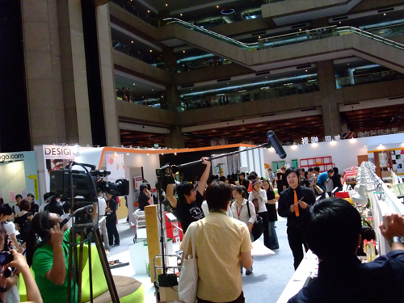
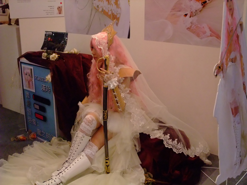
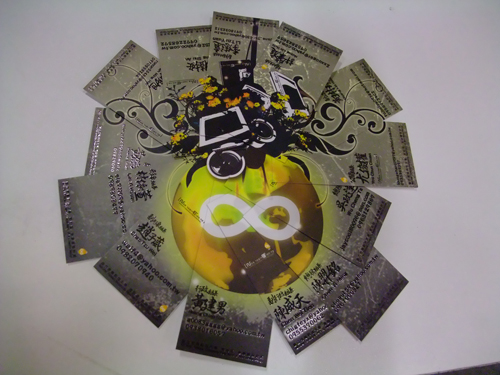

新一代設計展，SO COOL。好多互動多媒體，出現在各大學。這次很特別，是在第一
天展覽就去了。看到不少學校做了變化。第一天去也感受到，入圍同學&評審老師的氣氛
看到許多學校的展出，覺得我們系應該參加。不過沒關係，校外展我們就辦好一點吧!
這次新一代設計展看完給我的感想是:
1.有哇~~但是不多，還得深入研究
2.比起某些學校我們系也是不賴的
3.腳酸!!腳酸!!腳酸!!!
 入圍者 說明設計理念(現場錄影)
 台藝大學生coaplay自己的遊戲作品
 虎科畢籌會名片拼圖